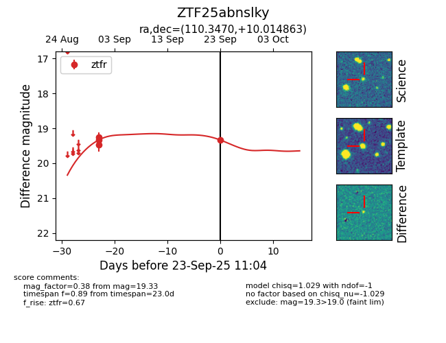
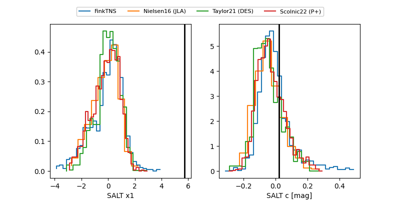

FINK: ZTF25abnslky
Lasair: ZTF25abnslky
ALeRCE: ZTF25abnslky
ZTF25abnslky (ztf,fink)
equatorial (ra, dec) = (110.3470,+10.01486)
galactic (l, b) = (207.3014,+11.15736)


last ztfr=19.33
4 ztfr detections